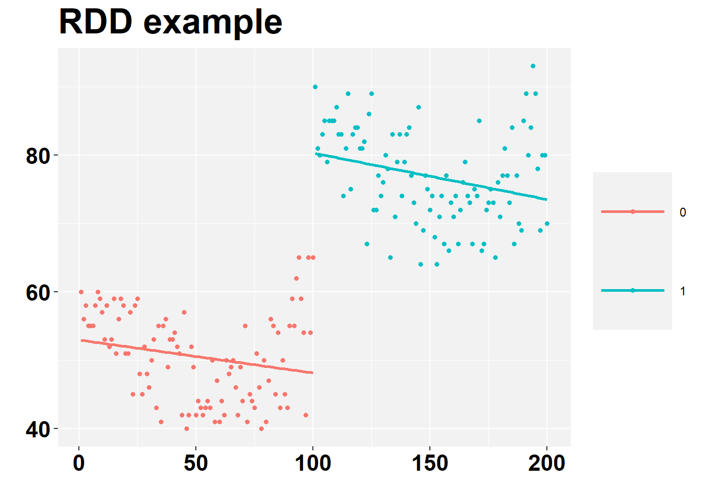
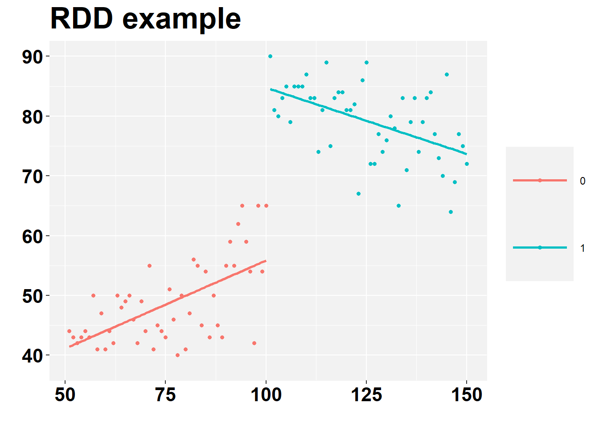

5 Exercises
5.1 Master coding marathon (2020 Oct)
This is part of my Master course: Empirical Corporate Finance and Governance
Before we start, load the following packages
5.1.1 Exercise 1
1) Using the dataset CRIME2.dta, provide an estimation and a THOROUGH interpretation of the following model:
\[crimes_{i,t} = β_1+ β_2 Pop_{i,t}+β_3 unem+β_4 officers+γ_i+ε_t\]
Where γ_i = Area fixed effects
The solution is:
rm(list = ls())
data <- read_dta("files/CRIME2.DTA")
datapanel <- pdata.frame(data, index=c("area","year"))
EX_1 <- plm(crimes ~ pop + unem + officers , data=datapanel, model="within")
summary(EX_1)## Oneway (individual) effect Within Model
##
## Call:
## plm(formula = crimes ~ pop + unem + officers, data = datapanel,
## model = "within")
##
## Balanced Panel: n = 46, T = 2, N = 92
##
## Residuals:
## Min. 1st Qu. Median 3rd Qu. Max.
## -18940.2 -2275.3 0.0 2275.3 18940.2
##
## Coefficients:
## Estimate Std. Error t-value Pr(>|t|)
## pop 0.096297 0.041652 2.3119 0.02564 *
## unem 153.656368 301.509194 0.5096 0.61292
## officers 16.864757 9.080762 1.8572 0.07014 .
## ---
## Signif. codes: 0 '***' 0.001 '**' 0.01 '*' 0.05 '.' 0.1 ' ' 1
##
## Total Sum of Squares: 3007200000
## Residual Sum of Squares: 2437400000
## R-Squared: 0.18947
## Adj. R-Squared: -0.7153
## F-statistic: 3.35062 on 3 and 43 DF, p-value: 0.027546Fundamental interpretation:
- An increase of 1 person in population is associated with an increase of 0.09 points of crime. The significance is at the 3% level.
- The number of officers is positively associated with crime. The significance is at the 8 % level.
- The remaining two variables are not significant.
- R-squared seems ok, around 19%
5.1.2 Exercise 2
2) Repeat exercise 1 using a first difference model.
The solution is
## Oneway (individual) effect First-Difference Model
##
## Call:
## plm(formula = crimes ~ pop + unem + officers, data = datapanel,
## model = "fd")
##
## Balanced Panel: n = 46, T = 2, N = 92
## Observations used in estimation: 46
##
## Residuals:
## Min. 1st Qu. Median 3rd Qu. Max.
## -23327.99 -4808.84 -434.39 4177.11 32626.66
##
## Coefficients:
## Estimate Std. Error t-value Pr(>|t|)
## (Intercept) 6.6076e+03 2.5187e+03 2.6234 0.01208 *
## pop 5.7103e-02 4.1825e-02 1.3653 0.17943
## unem 1.1122e+03 4.6203e+02 2.4072 0.02055 *
## officers 1.5668e+01 8.5291e+00 1.8370 0.07330 .
## ---
## Signif. codes: 0 '***' 0.001 '**' 0.01 '*' 0.05 '.' 0.1 ' ' 1
##
## Total Sum of Squares: 5577600000
## Residual Sum of Squares: 4188500000
## R-Squared: 0.24905
## Adj. R-Squared: 0.19541
## F-statistic: 4.64301 on 3 and 42 DF, p-value: 0.00683Fundamental interpretation:
- Now, unemployment is significant. The association is positive. Significance at the 3% level.
- Pop and Officers are not significant
- R-squared increases to 25%
- Notice the number of observations. It is half the number if Exercise 1. This is because Exercise 2 is the first difference. You lose 1 observation per individual.
5.1.3 Exercise 3
3) Using the dataset DiD.xlsx, provide an estimation and a THOROUGH interpretation of a difference-in-difference model:
- Where:
- Treated: A and B groups
- Control: C to G groups
- The exogenous shock occurred in 2010
- Covariates: x1, x2 and x3.
- All variables are in levels (not logarithms)
The solution is:
rm(list = ls())
dataDiD <- read_excel("files/DiD.xlsx")
# Creating a dummy (binary) variable to indicate time (post and before treatment)
dataDiD$time <- as.numeric(dataDiD$year >= 2010)
# Creating a dummy to indicate treatment
dataDiD$treated <- 0
dataDiD$treated[dataDiD$group == "A"] <- 1
dataDiD$treated[dataDiD$group == "B"] <- 1
#* Generating the interaction between treated and time
dataDiD$did = dataDiD$time*dataDiD$treated
# Estimating the DD
did11 <- lm(y ~ time + treated + did + x1 + x2 + x3, data = dataDiD)
summary(did11)##
## Call:
## lm(formula = y ~ time + treated + did + x1 + x2 + x3, data = dataDiD)
##
## Residuals:
## Min 1Q Median 3Q Max
## -2.76559 -0.53483 -0.07086 0.46097 2.93998
##
## Coefficients:
## Estimate Std. Error t value Pr(>|t|)
## (Intercept) 0.71417 0.21456 3.329 0.00113 **
## time 0.05300 0.20359 0.260 0.79501
## treated 1.14398 0.27761 4.121 6.60e-05 ***
## did 0.27200 0.38088 0.714 0.47639
## x1 0.35768 0.03506 10.201 < 2e-16 ***
## x2 -0.29309 0.06461 -4.536 1.26e-05 ***
## x3 0.11981 0.04133 2.899 0.00438 **
## ---
## Signif. codes: 0 '***' 0.001 '**' 0.01 '*' 0.05 '.' 0.1 ' ' 1
##
## Residual standard error: 1.018 on 133 degrees of freedom
## Multiple R-squared: 0.5372, Adjusted R-squared: 0.5164
## F-statistic: 25.73 on 6 and 133 DF, p-value: < 2.2e-16Fundamental interpretation:
- The treated group seem to have higher Y than the control group. The variable treated is significant at the 0.01% level.
- The shock does not seem to affect the treated group. The variable did is not significant.
- All covariates are significant at the 1% level.
- Overall, the conclusion is that the shock does not “work”, since did is not significant.
5.1.4 Exercise 4
Using the dataset FERTIL2.rdata, provide an estimation and a THOROUGH interpretation of the following model by OLS:
\[children = β_1+ β_2 educ+β_3 age+β_4 age^2+μ \]
Additional comments:
- The variable frsthalf is a dummy marking if the woman was born during the first semester of a given year. Assuming that frsthalf is uncorrelated with the error term of eq. 1, check whether it is a reasonable IV for educ.
- Estimate the model above, using frsthalf as an IV for educ. Compare the estimations with eq. 1.
- Provide a comparison between the coefficients of educ in the OLS and the IV models
rm(list = ls())
load("files/FERTIL2.RData")
# OLS Model
iv_1 <- lm(children ~ educ + age + agesq , data=FERTIL2)
summary(iv_1) ##
## Call:
## lm(formula = children ~ educ + age + agesq, data = FERTIL2)
##
## Residuals:
## Min 1Q Median 3Q Max
## -5.8351 -0.7135 -0.0054 0.7141 7.5055
##
## Coefficients:
## Estimate Std. Error t value Pr(>|t|)
## (Intercept) -4.1383066 0.2405942 -17.200 <2e-16 ***
## educ -0.0905755 0.0059207 -15.298 <2e-16 ***
## age 0.3324486 0.0165495 20.088 <2e-16 ***
## agesq -0.0026308 0.0002726 -9.651 <2e-16 ***
## ---
## Signif. codes: 0 '***' 0.001 '**' 0.01 '*' 0.05 '.' 0.1 ' ' 1
##
## Residual standard error: 1.46 on 4357 degrees of freedom
## Multiple R-squared: 0.5687, Adjusted R-squared: 0.5684
## F-statistic: 1915 on 3 and 4357 DF, p-value: < 2.2e-16Fundamental interpretation:
- One additional year of education is associated with 0.09 fewer children.
- Age shows a non-linear relationship with children. The curve is inverted U-shaped
# 2SLS estimation - two-step
# Fist-stage
iv2_1stage <- lm(educ ~ age + agesq + frsthalf , data = FERTIL2)
summary(iv2_1stage)##
## Call:
## lm(formula = educ ~ age + agesq + frsthalf, data = FERTIL2)
##
## Residuals:
## Min 1Q Median 3Q Max
## -7.9599 -2.4941 0.2663 2.2663 14.9934
##
## Coefficients:
## Estimate Std. Error t value Pr(>|t|)
## (Intercept) 9.6928643 0.5980686 16.207 < 2e-16 ***
## age -0.1079504 0.0420402 -2.568 0.0103 *
## agesq -0.0005056 0.0006929 -0.730 0.4657
## frsthalf -0.8522854 0.1128296 -7.554 5.12e-14 ***
## ---
## Signif. codes: 0 '***' 0.001 '**' 0.01 '*' 0.05 '.' 0.1 ' ' 1
##
## Residual standard error: 3.711 on 4357 degrees of freedom
## Multiple R-squared: 0.1077, Adjusted R-squared: 0.107
## F-statistic: 175.2 on 3 and 4357 DF, p-value: < 2.2e-16# Predict Y hat
Y2hat <- fitted(iv2_1stage)
# Second-stage
iv2_2stage <- lm(children ~ Y2hat + age + agesq, data = FERTIL2)
summary(iv2_2stage)##
## Call:
## lm(formula = children ~ Y2hat + age + agesq, data = FERTIL2)
##
## Residuals:
## Min 1Q Median 3Q Max
## -5.6519 -0.7580 -0.0187 0.7297 7.8906
##
## Coefficients:
## Estimate Std. Error t value Pr(>|t|)
## (Intercept) -3.3878054 0.5503400 -6.156 8.14e-10 ***
## Y2hat -0.1714989 0.0533921 -3.212 0.00133 **
## age 0.3236052 0.0179310 18.047 < 2e-16 ***
## agesq -0.0026723 0.0002808 -9.516 < 2e-16 ***
## ---
## Signif. codes: 0 '***' 0.001 '**' 0.01 '*' 0.05 '.' 0.1 ' ' 1
##
## Residual standard error: 1.497 on 4357 degrees of freedom
## Multiple R-squared: 0.5466, Adjusted R-squared: 0.5463
## F-statistic: 1751 on 3 and 4357 DF, p-value: < 2.2e-16Fundamental interpretation:
- In the first-stage, when women were born during the first semester of a year, they receive less education. The IV seems good.
- In the second-stage, one additional year of education is associated with 0.17 fewer children. This is a magnitude almost twice higher than the OLS results.
# ivreg - one-step estimation
iv_2 <- ivreg(children ~ educ + age + agesq | age + agesq + frsthalf , data = FERTIL2)
summary(iv_2)##
## Call:
## ivreg(formula = children ~ educ + age + agesq | age + agesq +
## frsthalf, data = FERTIL2)
##
## Residuals:
## Min 1Q Median 3Q Max
## -6.05272 -0.71481 0.06224 0.76236 7.23693
##
## Coefficients:
## Estimate Std. Error t value Pr(>|t|)
## (Intercept) -3.3878054 0.5481502 -6.180 6.98e-10 ***
## educ -0.1714989 0.0531796 -3.225 0.00127 **
## age 0.3236052 0.0178596 18.119 < 2e-16 ***
## agesq -0.0026723 0.0002797 -9.555 < 2e-16 ***
## ---
## Signif. codes: 0 '***' 0.001 '**' 0.01 '*' 0.05 '.' 0.1 ' ' 1
##
## Residual standard error: 1.491 on 4357 degrees of freedom
## Multiple R-Squared: 0.5502, Adjusted R-squared: 0.5499
## Wald test: 1765 on 3 and 4357 DF, p-value: < 2.2e-16Important: The results are the same as those obtained in the second-step estimation. However, std. errors are different. This is not a problem here because it does not change the main interpretation. It could be a problem in other cases.
5.1.5 Exercise 5
5) Using the dataset RDD.xlsx, provide an estimation and a THOROUGH interpretation of regression discontinuity design.
- Hints:
- Check for a discontinuity.
- Use 50 observations of each side of the cut.
- Check if both sides have similar trends.
This is the solution
rm(list = ls())
dataRDD <- read_excel("files/RDD.xlsx")
# Generate a line graph - Including all observations together
ggplot(dataRDD, aes(x, y)) +
geom_point( size=1.25) +
labs(y = "", x="", title = "Evolution of Y - Control and Treatment groups")+
theme(plot.title = element_text(color="black", size=25, face="bold"),
panel.background = element_rect(fill = "grey95", colour = "grey95"),
axis.text.y = element_text(face="bold", color="black", size = 16),
axis.text.x = element_text(face="bold", color="black", size = 16),
legend.title = element_blank(),
legend.key.size = unit(2, "cm")) +
geom_smooth(method = "lm", fill = NA)## `geom_smooth()` using formula 'y ~ x'
It seems we have an abrupt discontinuity here. The cut seems to be when X = 100. This graph suggests that, ignoring the discontinuity, the association between X and Y is positive.
Let’s split the observations into two groups now, using X=100 as threshold:
# Creating groupS
dataRDD$treated <- 0
dataRDD$treated[dataRDD$x >= 101] <- 1
# Generate a line graph - two groups
ggplot(dataRDD, aes(x, y, group=treated, color = factor(treated))) +
geom_point( size=1.25) +
labs(y = "", x="", title = "RDD example")+
theme(plot.title = element_text(color="black", size=25, face="bold"),
panel.background = element_rect(fill = "grey95", colour = "grey95"),
axis.text.y = element_text(face="bold", color="black", size = 16),
axis.text.x = element_text(face="bold", color="black", size = 16),
legend.title = element_blank(),
legend.key.size = unit(2, "cm")) +
geom_smooth(method = "lm", fill = NA)## `geom_smooth()` using formula 'y ~ x'It becomes clear that, within each group, the association is negative.
Let’s look only for the observations close to the cut for a moment:
# define cut
cut <- 100
# define the bandwidth - using 50 observations each side
band <- 50
xlow = cut - band
xhigh = cut + band
# subset the data for the bandwidth
data <- subset(dataRDD, x > xlow & x <= xhigh, select=c(x, y, treated))
# Generate a line graph - two groups
ggplot(data, aes(x, y, group=treated, color = factor(treated))) +
geom_point( size=1.25) +
labs(y = "", x="", title = "RDD example")+
theme(plot.title = element_text(color="black", size=25, face="bold"),
panel.background = element_rect(fill = "grey95", colour = "grey95"),
axis.text.y = element_text(face="bold", color="black", size = 16),
axis.text.x = element_text(face="bold", color="black", size = 16),
legend.title = element_blank(),
legend.key.size = unit(2, "cm")) +
geom_smooth(method = "lm", fill = NA)## `geom_smooth()` using formula 'y ~ x'
It seems that, close to the cut, the associations are different: it is positive when X < cut, and negative when X>cut. We may use this finding to define our RDD model below.
Let’s estimate the RDD now:
# Regression - not RDD yet (this is the result of the first graph)
rdd1 <- lm(y ~ x , data = data)
summary(rdd1)##
## Call:
## lm(formula = y ~ x, data = data)
##
## Residuals:
## Min 1Q Median 3Q Max
## -21.1020 -7.0202 -0.3039 4.1966 25.8967
##
## Coefficients:
## Estimate Std. Error t value Pr(>|t|)
## (Intercept) 16.97302 3.55621 4.773 6.35e-06 ***
## x 0.46664 0.03401 13.721 < 2e-16 ***
## ---
## Signif. codes: 0 '***' 0.001 '**' 0.01 '*' 0.05 '.' 0.1 ' ' 1
##
## Residual standard error: 9.817 on 98 degrees of freedom
## Multiple R-squared: 0.6576, Adjusted R-squared: 0.6542
## F-statistic: 188.3 on 1 and 98 DF, p-value: < 2.2e-16# Generating xhat - Now we are going to the RDD
data$xhat <- data$x - cut
# Generating xhat * treated to allow different inclinations (we will use the findings of the last graph, i.e. that each group has a different trend.)
data$xhat_treated <- data$xhat * data$treated
# RDD Assuming different trends
rdd2 <- lm(y ~ xhat + treated + xhat_treated, data = data)
summary(rdd2)##
## Call:
## lm(formula = y ~ xhat + treated + xhat_treated, data = data)
##
## Residuals:
## Min 1Q Median 3Q Max
## -12.9477 -3.2607 0.6875 3.2227 12.2004
##
## Coefficients:
## Estimate Std. Error t value Pr(>|t|)
## (Intercept) 55.83059 1.53681 36.329 < 2e-16 ***
## xhat 0.29431 0.05405 5.445 3.97e-07 ***
## treated 28.93921 2.20672 13.114 < 2e-16 ***
## xhat_treated -0.51587 0.07644 -6.749 1.13e-09 ***
## ---
## Signif. codes: 0 '***' 0.001 '**' 0.01 '*' 0.05 '.' 0.1 ' ' 1
##
## Residual standard error: 5.515 on 96 degrees of freedom
## Multiple R-squared: 0.8942, Adjusted R-squared: 0.8909
## F-statistic: 270.3 on 3 and 96 DF, p-value: < 2.2e-16Fundamental interpretation:
- The treated group (i.e. the group at the right of the cut) shows 29 units of Y more than control group. This is a significant difference, suggesting that the treatment “works”
- The trend is positive when X<cut. The coefficient is 0.29 and is significant.
- The trend is negative when X>cut. The coefficient is -0.51 and is significant.
5.1.6 Conclusion
If you have any thoughts, let me know! Thanks for passing by!